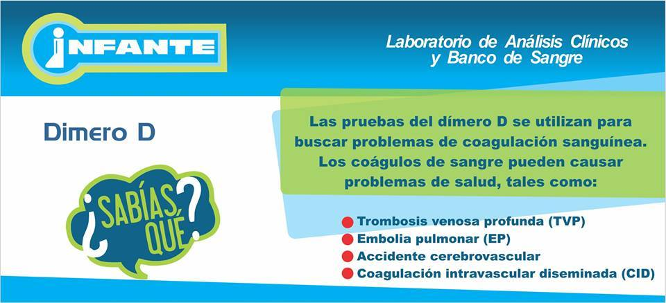
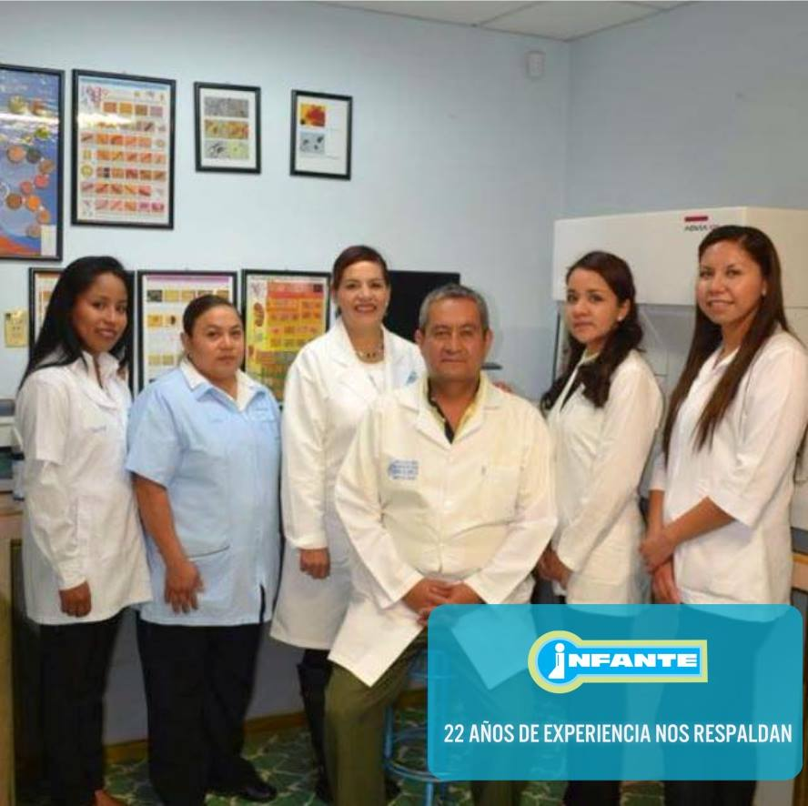

Siempre honestos!
Somos una empresa comprometida fuertemente con la lealtad de nuestros pacientes, ofreciendo
una gran variedad de estudios realizados mediante equipos clinicos de última generación.
Desde nuestra fundación nuestro compromiso con la calidad óptima y veracidad de nuestros estudios
sigue siendo nuestro mayor pilar, donde somo orgullosamente guanajuatenses, con nuestro laboratorio
matriz en Valle de Santiago.
Nos comprometemos a ganar su confianza al
entregarle resultados confiables para
apoyar el cuidado de su salud
Nuestra Técnologia
En el laboratorio clínico Infante, nos
enorgullece contar con la mejor
tecnología disponible para llevar a cabo
análisis clínicos de la más alta calidad.
Nuestro compromiso es brindar resultados
precisos y confiables que ayuden a
nuestros pacientes a tomar decisiones
informadas sobre su salud.
Para lograr esto, hemos invertido en
equipos de vanguardia que están a la
vanguardia de la tecnología médica.
Nuestro laboratorio está equipado con
instrumentos de última generación que
nos permiten realizar una amplia gama de
pruebas y análisis, abarcando desde
exámenes de rutina hasta pruebas
especializadas y avanzadas.
Nuestro Modelo
Nuestro modelo de atención en el laboratorio clínico Infante se basa en ofrecer un servicio
integral y centrado en el paciente. Nos esforzamos por brindar una experiencia positiva desde el
momento en que nuestros pacientes ingresan a nuestras instalaciones hasta la entrega de los resultados
de los análisis clínicos.
En Infante, nos esforzamos por agilizar el proceso para minimizar los tiempos de espera
y brindar resultados precisos y oportunos. Nuestra inversión en la mejor tecnología disponible
nos permite realizar una amplia gama de pruebas y análisis con eficiencia y precisión.

Nuestra Historia
En el laboratorio clínico Infante, nacio en el año de 1994 en el municipio de Valle de Santiago,
Guanajuato con la finalidad de brindar un servicio integral y de excelencia en el campo de los análisis clínicos,
con el objetivo de contribuir al bienestar y la salud de nuestros pacientes.
Ahora este objetivo se ha expandido a
otros municipios con el fin de mejorar la calidad de vida y de proporcionar honestidad a cada uno de nuestros
pacientes. Al contribuir al cuidado de la salud y al bienestar de nuestros pacientes a
través de resultados precisos, diagnósticos tempranos, prevención de enfermedades y un enfoque centrado en el paciente.
Nuestra meta es ser un socio confiable en el camino hacia una vida saludable y mejorar la calidad de vida de aquellos a quienes servimos.
